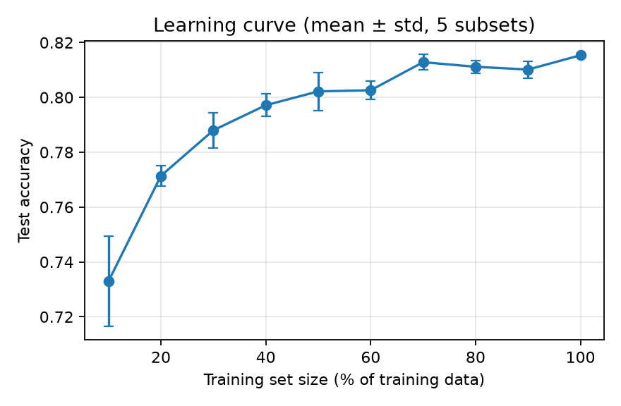
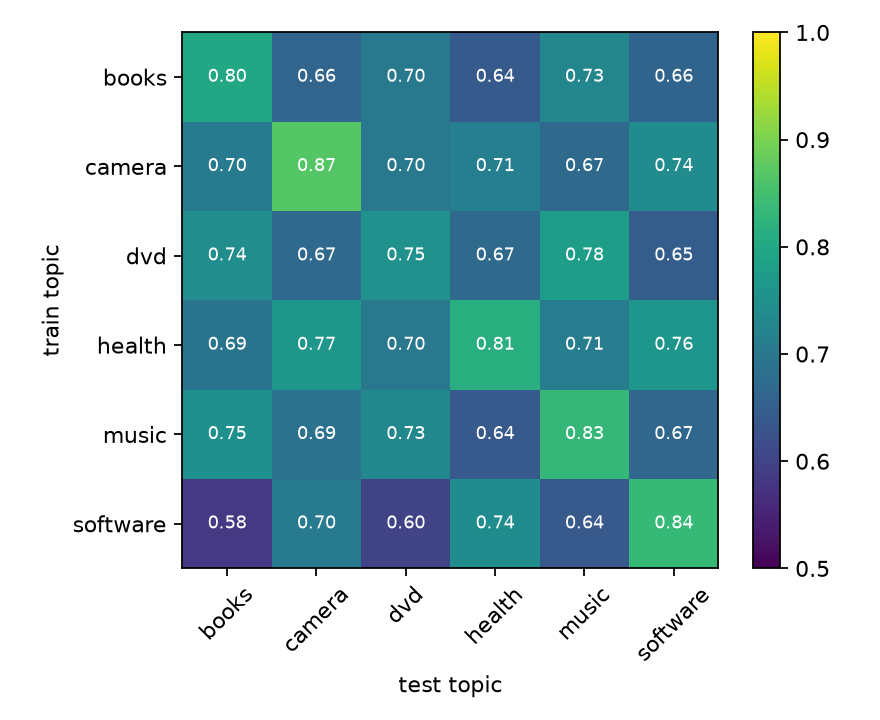

SYDE 572 · Assignment 4
Text Classification with Naive Bayes
Name: ____________________ Student ID: ____________________
I. Data and Setup
The file all_sentiment_shuffled.txt has one tokenized, lowercased review per line (topic, polarity, id, words). The topic and id are discarded. The first 80% (9,531 reviews: 4,847 pos, 4,684 neg) is used for training and the last 20% (2,383 reviews) for evaluation. The training vocabulary has 52,392 word types. Code: nb.py; raw output: output.txt.
II. Method
train_nb stores the class priors P(c) and the per-class word counts. The smoothed likelihood is
P(w | c) = (count(w, c) + α) / (Nc + α(V + 1)),
where Nc is the total number of word tokens in class c and V the vocabulary size; the extra +1 gives unseen words a nonzero probability, so scoring never fails. score_doc_label returns log P(c) + Σw log P(w | c) (log probabilities avoid underflow). classify_nb returns the arg-max label, classify_documents maps it over a list, and accuracy is the fraction of correct predictions. Class labels are not hard-coded.
III. Sanity Checks
| Document | P(doc, pos) | P(doc, neg) |
|---|---|---|
| ["great"] | 0.001321 | 0.000528 |
| ["bad"] | 0.000172 | 0.000455 |
"great" scores higher as positive and "bad" higher as negative, as expected. (α = 1.) The document ['a','top-quality','performance'] contains unseen words and scores without error (log scores: neg −27.04, pos −26.37).
IV. Results
Test accuracy with α = 1: 0.8154 (440 of 2,383 documents misclassified). Effect of the smoothing parameter:
| α | 0.1 | 0.5 | 1.0 | 2.0 |
|---|---|---|---|---|
| Accuracy | 0.7935 | 0.8091 | 0.8154 | 0.8154 |
Little smoothing hurts because rare words get extreme, unreliable probabilities; accuracy plateaus around α = 1–2.
V. Error Analysis
Examples of confidently wrong predictions (margin = log-score of predicted label minus log-score of true label):
- Negation. "this was not a waste of brad's time or mine . good job !" (true pos, predicted neg, margin 3.7). The bag-of-words model sees "waste" and "not" as negative evidence and cannot see that "not" reverses "waste".
- Criticism inside a positive review. "excellent service , and the product worked extremely well . the only criticism i would have is the cost of postage . it was ridiculous ..." (true pos, predicted neg, margin 4.7). Several negative words ("criticism", "ridiculous") outweigh the praise even though the overall verdict is positive.
- Mostly factual or off-topic text. The ZoneAlarm review ("if i did n't already have norton antivirus , i 'd use the antivirus , too", true pos, margin 8.1) and the MacBook review (margin 3.8) are largely descriptive; the few sentiment words are weak, and words like "norton" and "did n't" carry negative statistics from other reviews.
- Long reviews. The largest margins (up to 127) are on reviews with over 1,000 tokens, e.g. a negative camera review ("sadly , the camera is not up to filling this role") predicted positive. Naive Bayes adds evidence from every word as if words were independent, so a long review that describes features favorably before delivering a negative verdict accumulates a large wrong-direction score.
VI. Optional Tasks
All code is in optional.py (run in the syde572 conda env; requirements.txt), raw output in output/optional_output.txt. Same 80/20 split as before.
A. Six-category topic classifier
The same Naive Bayes code with topic labels instead of polarity gives 90.5% accuracy (chance ≈ 17%). The main confusion is health reviews predicted as camera (54 of 434), plausibly because both discuss consumer products and "returned/works/easy"-type vocabulary; books vs. dvd is the next largest (27 and 14).
B. Learning curve
Accuracy rises quickly and flattens: 73.3% with 10% of the training data, 78.8% at 30%, 80.2% at 50%, and about 81% from 70% on (mean of 5 random subsets per size; std ≤ 0.017). More data would give only small further gains.

C. Informative features
print_top_nb(k, model) ranks words by log P(w|pos) − log P(w|neg) with heavy smoothing (α = 50, which suppresses rare words). Top 20 each:
Positive: excellent, easy, season, amazing, highly, wonderful, illustrator, lenses, great, perfect, favorite, best, allows, pluto, fantastic, photoshop, pleased, lens, love, zoom.
Negative: waste, worst, boring, horrible, support, poor, customer, warranty, terrible, refund, unfortunately, disappointing, worse, error, nothing, bad, garbage, disappointed, disappointment, repair.
Many are generic sentiment words, but some are domain artifacts: "lenses/zoom/photoshop/illustrator/pluto/season" are positive and "support/customer/warranty/repair/error" negative because of how those topics' reviews are distributed, not because the words are intrinsically polar. Per-topic lists (in the output file) show this directly, e.g. camera negatives: warranty, repair, return, service; dvd positives: season, batman, buffy.


D. Naive Bayes for numerical data (iris)
Class-conditional Gaussians were fit by maximum likelihood (sample mean and standard deviation for each of 4 features × 3 classes) and scored with log pdfs plus the log prior. On a random 40-flower evaluation set the accuracy is 100%, identical to scikit-learn's GaussianNB. (The iris classes are nearly separable, and with only 40 test points this is a noisy estimate.)
E. scikit-learn classifiers
| Classifier (TF-IDF features) | Test accuracy |
|---|---|
| Own Naive Bayes | 0.8154 |
| LinearSVC | 0.8523 |
| MLP (SelectKBest k = 1000, 50 epochs, did not fully converge) | 0.8351 |
The linear SVM beats Naive Bayes by about 3.7 points, since it learns discriminative weights instead of assuming independent words.
F. Improved features
| Features | α = 0.5 | α = 1 |
|---|---|---|
| Unigrams (baseline) | 0.8091 | 0.8154 |
| + negation marking (Pang et al.) | 0.8091 | 0.8086 |
| + bigrams | 0.8561 | 0.8569 |
| + negation + bigrams | 0.8573 | 0.8552 |
Bigrams give a clear gain of about 4 points (81.5% → 85.7%), since pairs like "not good" and "waste of" capture local negation and phrases. Negation marking (prefix NOT_ on words after not/n't/no/never until punctuation) did not help alone here: it splits the counts of each word across two features, which dilutes the statistics with this modest amount of data. Combined with bigrams it is about equal to bigrams only.
G. Domain sensitivity
Each topic was split 80/20 separately; classifiers were trained on one topic and tested on every topic's test set (diagonal = in-domain).

Camera classifier: 86.8% on camera test reviews but 70.5% on book reviews, a drop of 16.3 points; the book classifier itself reaches 79.8% in-domain, so relative to the book in-domain accuracy the cross-domain camera classifier loses about 9 points. In general in-domain accuracy (diagonal, 75–87%) is higher than every off-diagonal entry in its row, with the worst transfers around 58–60% (software → books/dvd), because sentiment vocabulary is partly domain-specific (e.g., "boring" in books/dvd, "support"/"warranty" in products).